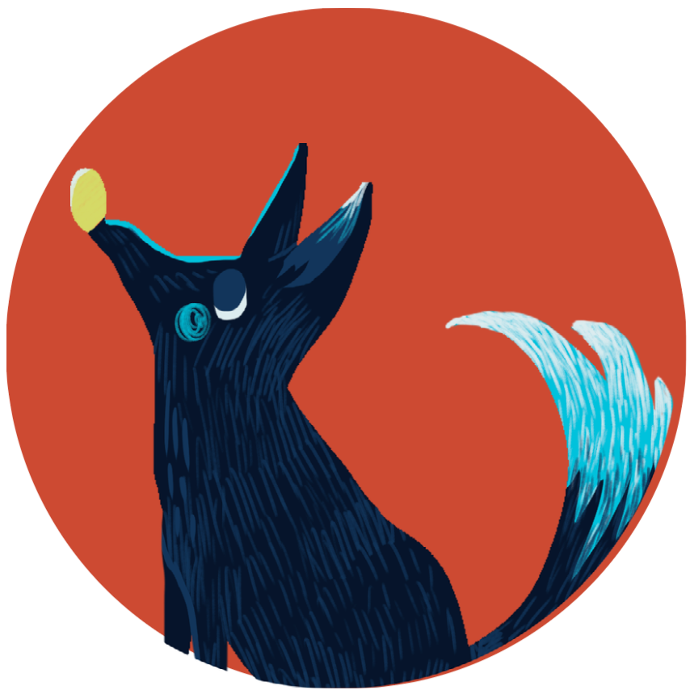
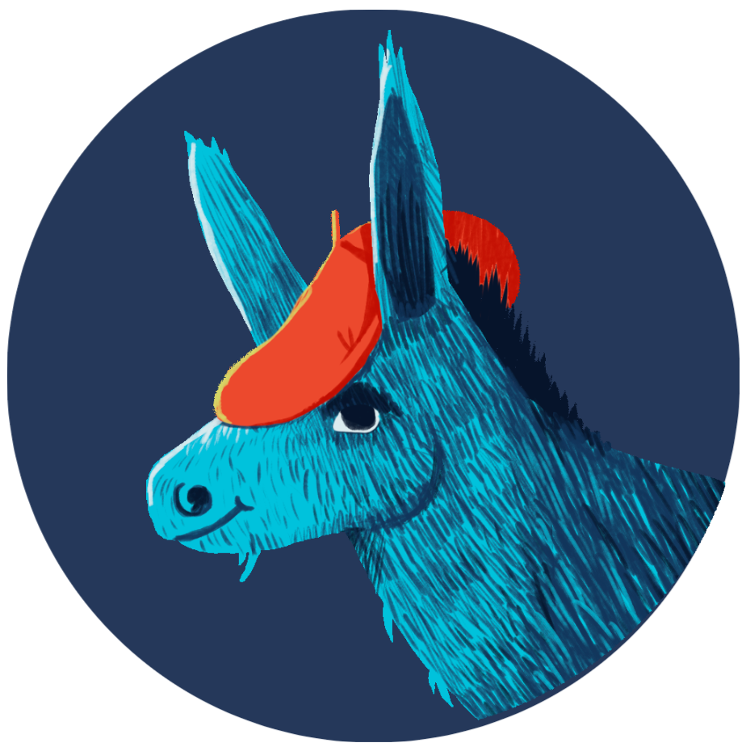

Über uns
Hörspiel
Charactere
Spiel und Spaß
Anti Mobbing, Freundschaft und Mut. Für diese Begriffe stehen wir mit unserem Kinderhörspiel „Das Geheimnis um die Mondscheintiere“
Santiago Ziesmer als ...
Santiago Ziesmer ist ein sehr bekannter deutscher Schauspieler und Synchronsprecher.
Ob groß oder klein, viele von uns kennen seine Stimme, denn eine seiner bekanntesten Synchronrollen ist die vom gelben Schwamm Spongebob Schwammkopf. Weitere bekannte Rollen sind die des ulkigen Jungen Steve Urkel aus „Alle unter einem Dach“ oder dem Lebkuchenmann aus „Shrek“
... Jim Jim
Jeder liebt ihn, den etwas komischen Vogel Jimjim.
Mit seinem kugelrunden Bauch fällt es dem niedlichen Vogel jedoch etwas schwer zu fliegen…
Denkt ihr er schafft es jemals sich zu überwinden, seine Flügel aufzuspannen und durch die Lüfte zu gleiten?
Ines Isabell als ...
Ines Isabell Braun ist Schauspielerin und lebt in Stuttgart.
Sie wirkt regelmäßig in verschiedenen Theaterproduktionen mit oder steht vor der Kamera.
... Juliane
Juliane ist die fiese Anführerin einer Mädchengang.
Sie ist in der Schule sehr beliebt und mit ihren Freundinnen hinter sich fühlt sie sich super stark.
Doch was passiert, wenn sie plötzlich ganz alleine ist…?
Mario Hassert als ...
Mario Hassert ist einer der bekanntesten deutschen Werbesprecher.
Seine markante, warme Stimme ist bestimmt vielen z. B. aus den TV-Spots von Coca Cola , Jochen Schweizer oder Köstritzer bekannt.
... Moon
JWir können es kaum abwarten, bis ihr unseren poetischen Wolf Moon endlich kennenlernt.
Obwohl er manchmal durch seine sehr elegante Wortwahl etwas arrogant rüberkommt, ist er ein sehr guter und fürsorglicher Freund.
Allerdings hat er große Angst falsche Töne zu jaulen und tut es deshalb nicht. Aber vielleicht kann ihn ja doch noch etwas von seiner Angst befreien…
A-Wuuuuhhh

Claudio Maniscalco als ...
Claudio Maniscalco ist nicht nur visuell als Schauspieler tätig.
Stimmlich agierend ist er parallel seit 38 Jahren auch als Sprecher in unzähligen Hörspielen, Dokus, Werbespots und über 900 Filmsynchronisationen zu erleben.
Mit seiner markanten Stimme leiht er vielen Hollywood Schauspielern seine Stimme.
Zu seinen populärsten Kollegen zählen (u.a.) Andy Garcia, Ru Paul, der Sänger Robbie Williams, Luciano Pavarotti.
... Pepe
Pepe ist ein sprechender Esel und liebt es mit seinem italienischen Akzent schlaue Weisheiten rauszuposaunen.
Er liebt das Leben und möchte es am liebsten nur genießen!
Deswegen hasst er auch Streit und Boshaftigkeit!
I-AAAH!!
